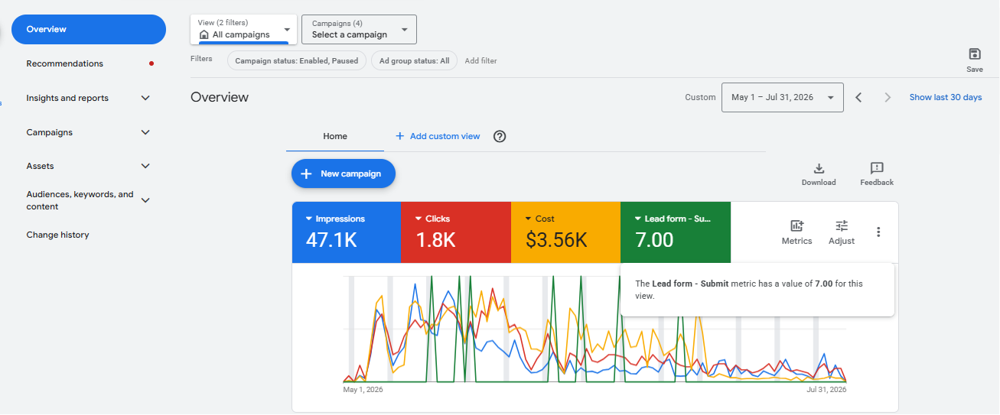

← Cases
Local SEO + SEM
Local SEO and bilingual SEM for a high-value Seattle real estate brand.
As the sole SEO owner for this remote, project-based engagement, I led the end-to-end local SEO and SEM work for Maggie Sun Real Estate. My responsibilities covered bilingual content strategy, technical SEO, local search visibility, Google Ads, lead tracking, off-site promotion, and performance reporting.
+486%qualified lead growth
6closed leads
7Google Ads leads
10%Google Ads CTR
Strategy & Execution
- Build content around buyer decisions: Planned English and bilingual content for Seattle buyers researching the market, comparing neighborhoods, and choosing agents. Covered housing costs, trends, policies, and buyer concerns. Keyword coverage grew to 700+. GSC recorded 2.14K clicks and 243K impressions after tracking was set up.
- Make answers easy to find: Used direct answers, FAQs, summaries, and comparison tables to address buyer questions. The GSC Generative AI report recorded 44.4K impressions from May 18 to July 31, 2026.
- Build high-intent search campaigns: Launched Google Ads for commercial real estate search terms. Reviewed targeting, search terms, negative keywords, and lead forms. The campaigns generated seven qualified leads at about 10% CTR.
- Use community feedback to plan content: Shared content and researched buyer questions through Reddit, Quora, Google Business Profile, LinkedIn, and email. One Seattle housing discussion received 365 comments and 160 upvotes, giving me real buyer feedback for future topics.
- Track leads through to closed sales: Combined website content, local SEO, bilingual marketing, and SEM. Used CRM records to check lead quality. The full program generated 41 qualified leads, including six closed transactions.
- Check migration and page quality: Helped check the WordPress-to-Brivity migration. Reviewed redirects, 404s, indexing, and page structure, published content, and checked the work after release.
Qualified leads increased from 7 in the previous comparable period to 41, representing a 486% increase. GSC recorded 2.14K clicks and 243K impressions after tracking was established. From May 18 to July 31, 2026, the dedicated GSC Generative AI performance report recorded 44.4K impressions.




1 / 4